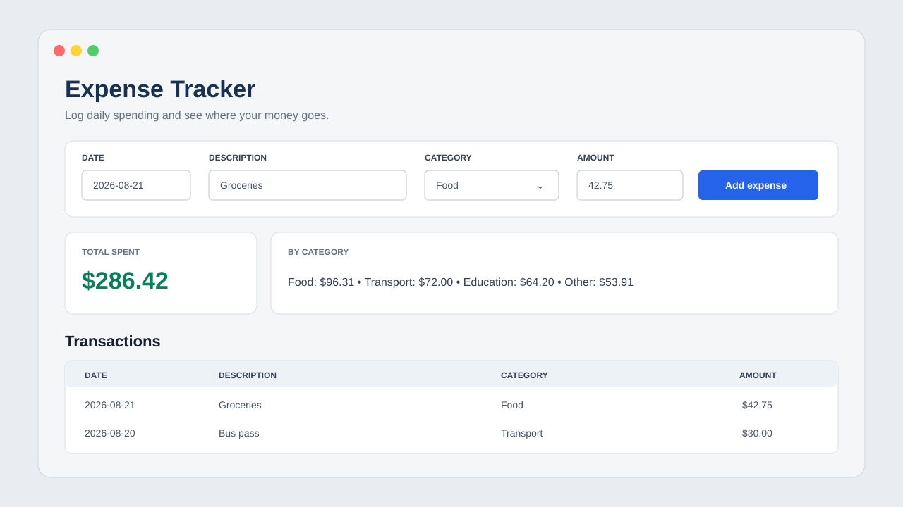
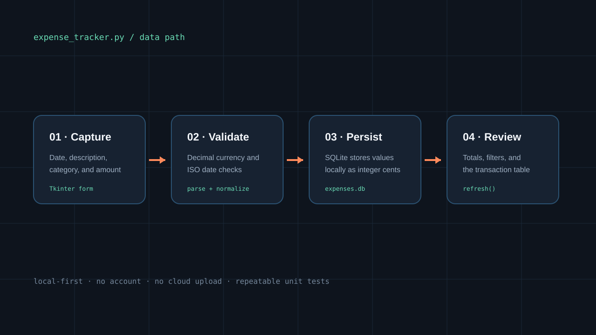

Keep daily spending understandable
The app records a date, description, category, and amount, then makes those entries easy to review later.
PROJECT 05 DESKTOP APPLICATION COMPLETE
A small desktop app for recording daily spending and seeing where the money goes, without creating an account or sending personal data to a server.

I wanted this project to solve a normal problem instead of only showing a programming concept. Tracking an expense gave me a clear path from a form, through validation, into a database, and back into a useful summary.
The app records a date, description, category, and amount, then makes those entries easy to review later.
SQLite stores everything on the user’s own computer. There is no account, server, or upload step.
People can add, filter, total, and delete expenses from one screen without learning a complex finance tool.
The interface gives the form, total, category breakdown, and transaction table their own visual level. I kept the color system simple so the numbers stay more important than decoration.
A single window keeps the most common actions close together.

Validation happens before the record is saved and the summaries are refreshed.
I used Decimal for input and saved integer cents so values do not pick up floating-point rounding errors.
Dates must use the ISO format, descriptions cannot be empty, and amounts must be valid and greater than zero.
The app creates ~/.expense_tracker/expenses.db, separating private user data from project source.
Unit tests cover parsing, validation, storage, totals, filtering, and deletion. GitHub Actions runs them again on every push.
This project helped me see how much work happens after someone clicks a button: validation, persistence, calculations, error handling, and refreshing the view all have to agree.
The sample values in the visual are fictional. The application keeps real financial entries on the local device and does not transmit them.
Open repository ↗